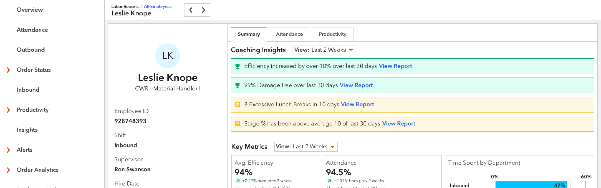
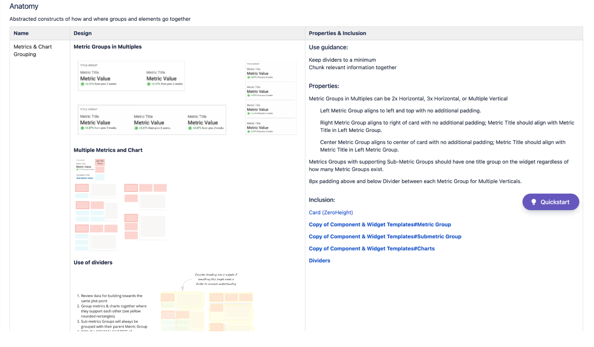
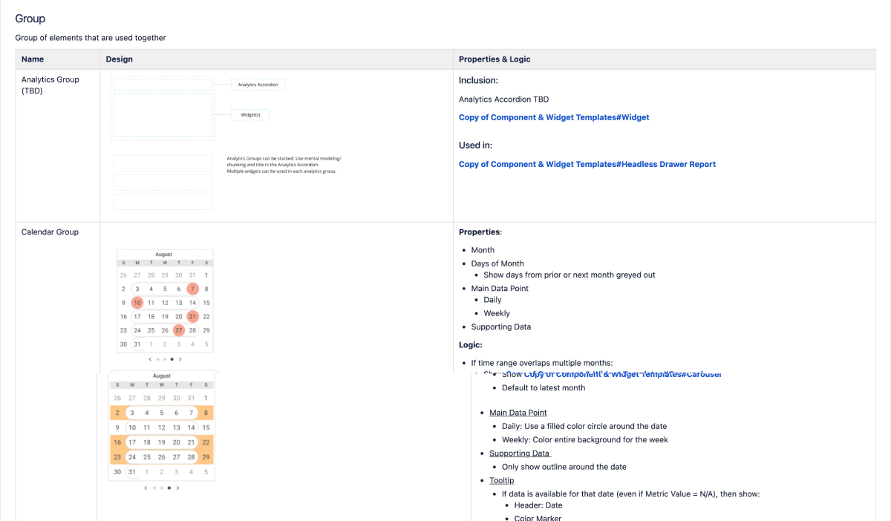
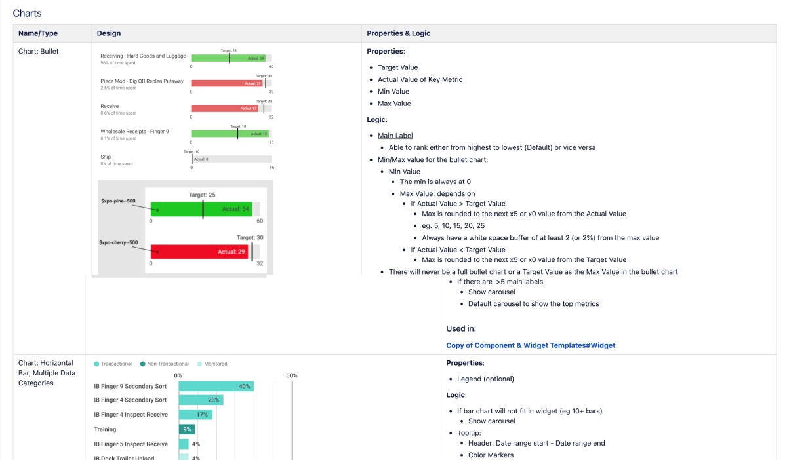
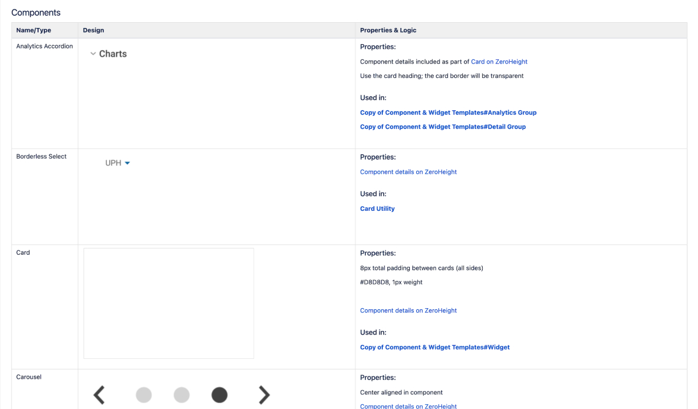

Case Study
Coaching Card

TL;DR
I designed a way for supervisors at a warehouse to evaluate employees individually. With this new design, I was able to take a process for finding an employee's Time Gaps that used to take a supervisor 7 minutes to run, down to a few seconds. I chose it as an example of impactful change.
View PrototypeBackground
XPO Logistics has over 150 warehouses across the United States that we contract out to retailers such as Apple, Adidas, and Nike to run their supply chain. Within each warehouse are many XPO employees - from floor-level employees such as bin pickers and cherry pickers to high-level executives. So we created a product called Smart, which optimizes both the warehouse itself and the labor force within it. In 2020, Smart delivered over $30 million in EBITDA between Supply Chain and LTL business units.
In the initial stage, Smart focused on the big picture. We began showing insight into the warehouse as a whole and how it was performing. As the product matured, we started finding new ways to create efficiency. One day the product owner challenged members of the dev and design team to develop ways to improve the existing product.
Cost is an important metric in the logistics industry, as most employees are paid hourly and can work overtime. As a team, we are constantly trying to reduce the cost within the warehouse.
One of our most-viewed features within Smart is Time Gaps. Time Gaps are the interval between two transactions, such as picking. They happen between every transaction and are normal, but they become a problem when they are excessive. There are four different types of time gaps:
- Current time gap: Time that has elapsed since the last transaction was performed up until the present time.
- Max time gap: The largest time interval between transactions within a specified time range.
- Average time Gap: The average time gap based on all transactions for the timeframe specified
- Excess time gap: Time gaps are grouped into different buckets outside of the norm. For example, 20-29 minutes, 30-44 minutes, 45+ minutes.
As I was exploring Smart, I realized that it was impossible to view a specific employee's Excess Time Gaps over a particular period (i.e., two weeks) without spending precious time or without proficiency in Excel. The process took four clicks and an export to Excel, sorting, and a new Excel function. This process took approximately 7 minutes per employee. Most of our primary users (supervisors) are high school graduates who have worked their way up from Pickers to Team Leads to Supervisors. Not only do they not have time to run this exercise for each employee, but many do not have the training to do so.
I brought this back to Ryan, the product owner, and it spurred a more extensive discussion around consolidating individual employee information into one area.
Goal
The goal of the Coaching Card is to consolidate all employee information into one area to make it easier for warehouse supervisors to evaluate and coach employees on the floor. We wanted to expose many KPIs and automate the process of finding Time Gaps.
Our stakeholders' goal was for this screen to "light up like a Christmas tree" when an employee is underperforming to highlight areas of improvement.
Design Iteration
Requirements
As a senior-level team member with the most experience in supply chain, the team looked to me to define the feature and create the requirements. I partnered with the project manager to choose what information we should show about each employee and presented it to the product owner. These were the areas we identified as necessary to the supervisors:
Wireframes
After reviewing the requirements with stakeholders, I jumped into Balsamiq to create wireframes. I received feedback that they wanted fewer tables of data and more data visualization.
High Fidelity
I began working in Figma using our existing design system to create the coaching card. Unfortunately, our existing card components did not have all of the functionality we needed and were a bit lackluster, so I began designing a new card component with more features. As soon as our stakeholders saw the new cards in practice, we decided to head in that direction.
The new metric cards needed to be flexible enough to replace the old ones while adding new functionality. I documented the patterns, anatomy, and scenarios using this component as part of the process. One of the most critical steps in creating a new component is to align with development and product on naming conventions. To reduce confusion, I made sure to establish the naming of specific components and groupings of components right out of the gate.
Below is an example of the old cards we used and how we applied the pattern:
These are some examples of the new cards along with the documentation.




Challenges
Color Palette
During the high-fidelity design process, we ended up going down a rabbit hole with our data visualization colors. To begin with, our color palette clashes with branding colors and has been modified by stakeholders. When our stakeholders saw the initial high fidelity designs, they wanted to assign meaning to each color and have positive (green) and negative (red) color palettes. For example, whenever Time Gaps are represented, they should always be carrot-500. I spent weeks reevaluating the color palette as a whole, including designs outside of the Coaching Card. I ended up creating a pattern that could be followed when designing in the future that assigns a color to each metric and has room for categorical, monochromatic, and diverging palettes.
In the end, we didn't end up using any of that work and just went with a darker color palette while also focusing on positives and negatives.
Screen Size
Most of XPO's design system is very limited in responsiveness due to a lack of development time and resources. At the start of the project, we looked into analytics to see what screen size our users were using, and our product owner chose to design it at 1920x1080 and only make it responsive on larger monitors. Unfortunately, we did not set up our analytics correctly, so we had to pivot and design for 1440x1024 toward the end of the project.
Changing Direction
At the beginning, an important part of the Coaching Card was to make Smart more prescriptive by drawing supervisors' attention to high-performing and low-performing employees using insights.
Final Design
Check out the embedded prototype below, or click here to open the prototype in your browser.
Summary
In conclusion, the Coaching Card is a decision-making tool for supervisors. We were successfully able to provide supervisors insight into their employee's performance and achievements. In doing so, we reduced a 7-minute process of exposing Time Gaps down to a few seconds.
If I were to revisit this project, one of the first items I would address would be the color palette.